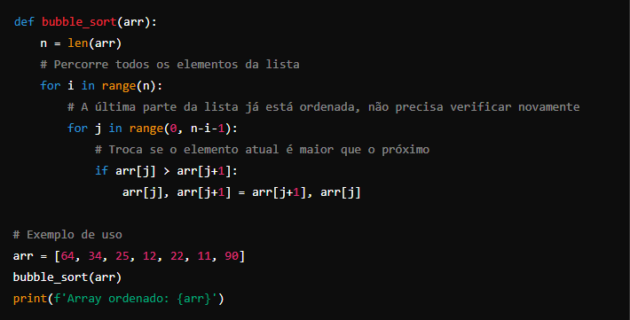
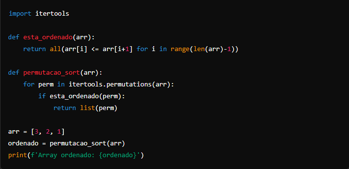

Algoritmos de Ordenação
ORDENAÇÃO POR BOLHA
A ordenação por bolha, conhecida como Bubble Sort, é um algoritmo de ordenação simples que percorre repetidamente a lista, comparando elementos adjacentes e trocando-os se estiverem na ordem errada. O processo se repete até que a lista esteja ordenada.

Como o algoritmo funciona:
Comparação de elementos adjacentes: Para cada elemento na lista, compare-o com o próximo. Se o elemento atual for maior que o próximo, eles são trocados.
Repetição do processo: Após cada iteração, o maior elemento "flutua" para o fim da lista, como uma bolha em um copo d'água, por isso o nome Bubble Sort. A cada nova passagem pela lista, o número de elementos a serem verificados diminui, pois os maiores já estão em suas posições finais.
Parada: O algoritmo continua passando pela lista até que nenhuma troca seja necessária, o que significa que a lista está ordenada.
ORDENAÇÃO POR PERMUTAÇÃO
A ordenação por permutação, também conhecida como Ordenação por Trocas Mínimas ou Permutação Sort, é uma técnica que ordena uma lista testando todas as possíveis permutações da lista e selecionando a que estiver ordenada. Embora seja uma abordagem interessante do ponto de vista teórico, na prática, é extremamente ineficiente devido à sua complexidade O(n!).

Como funciona o código:
itertools.permutations(arr): Gera todas as permutações possíveis da lista arr.
esta_ordenado(arr): Uma função auxiliar que verifica se a lista está ordenada, retornando True se estiver.
permutacao_sort(arr): Percorre todas as permutações geradas. Se encontrar uma permutação que esteja ordenada, essa lista é retornada como a lista ordenada.
Limitações:
A complexidade do algoritmo é O(n!), o que o torna impraticável para listas grandes.
É usado mais como uma curiosidade ou para fins educacionais, em vez de uma solução prática de ordenação.
Esse algoritmo só é viável para listas pequenas, devido ao número explosivo de permutações que precisam ser geradas e verificadas.